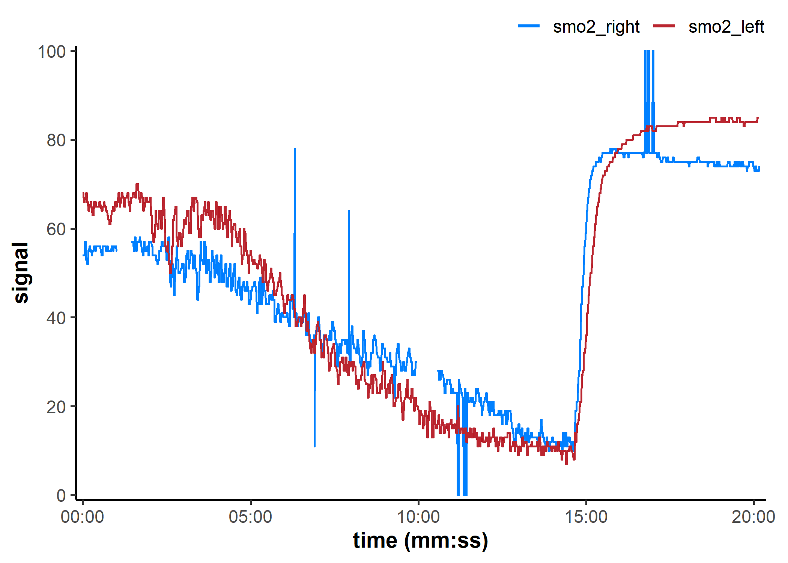
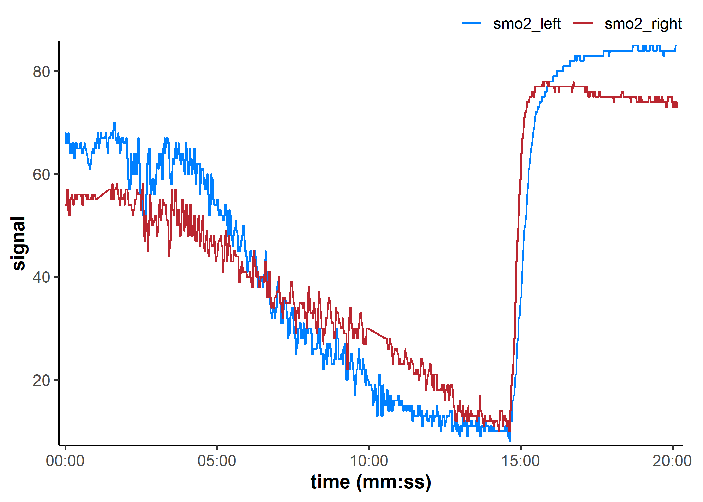
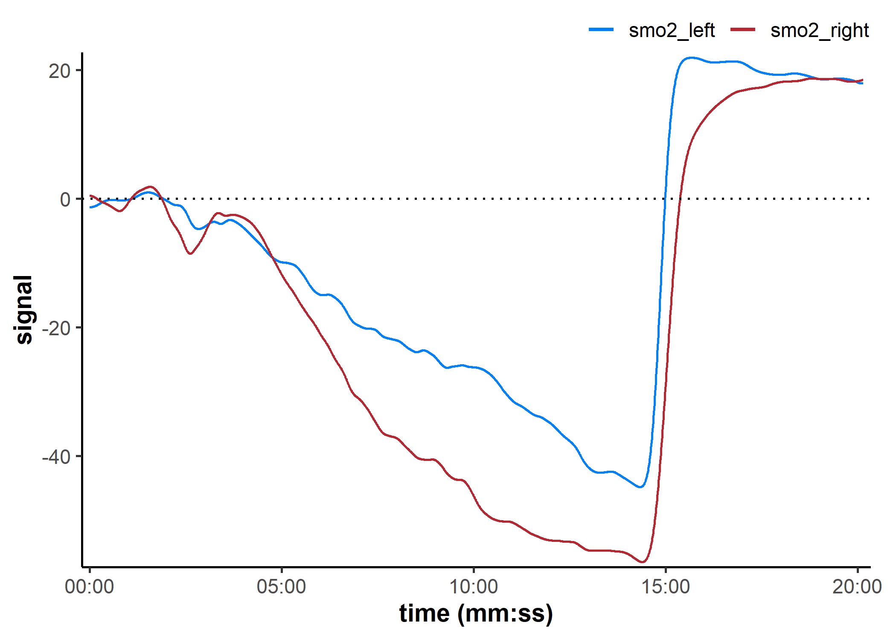
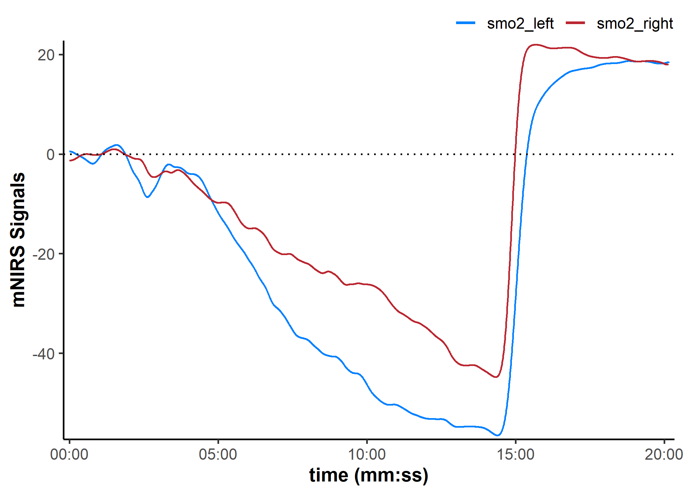
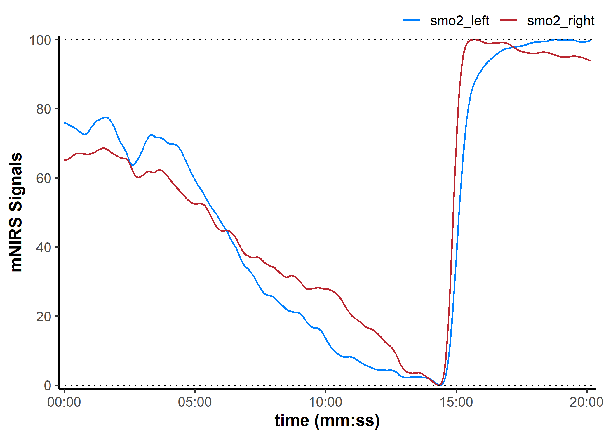

{mnirs} is a package for reading, processing, and analysing data from muscle near-infrared spectroscopy (mNIRS) devices.
Installation
You can install the development version of {mnirs} from GitHub with:
# install.packages("remotes")
remotes::install_github("jemarnold/mnirs")Online App
A very basic implementation of this package is hosted at https://jem-arnold.shinyapps.io/mnirs-app/ and can be used for mNIRS data importing and cleaning.
Usage
A more detailed vignette for common usage can be found here: Reading and Cleaning Data with {mnirs}
{mnirs} is currently in experimental development and functionality may change! Stay updated on development and follow releases at github.com/jemarnold/mnirs.
{mnirs} is designed to process mNIRS data, but there is no reason why it can’t be used to read, clean, and filter other time series datasets, which require many of the same processing steps. Enjoy!
read_mnirs() Read data from file
# remotes::install_github("jemarnold/mnirs") ## install development version
library(ggplot2) ## load for plotting
library(mnirs)
## {mnirs} includes sample files from a few mNIRS devices
example_mnirs()
#> [1] "artinis_intervals.xlsx" "moxy_intervals.csv"
#> [3] "moxy_ramp.xlsx" "train.red_intervals.csv"
## partial matching will error if matches multiple
try(example_mnirs("moxy"))
#> Error in example_mnirs("moxy") : ✖ Multiple files match "moxy":
#> ℹ Matching files: "moxy_intervals.csv" and "moxy_ramp.xlsx"
## call an example mNIRS data file
file_path <- example_mnirs("moxy_ramp")
## rename channels in the format `new_name1 = "original_name1"`
## where "original_name1" should match the file column name exactly
data_table <- read_mnirs(
file_path,
nirs_channels = c(smo2_right = "SmO2 Live", ## identify and rename channels
smo2_left = "SmO2 Live(2)"),
time_channel = c(time = "hh:mm:ss"), ## date-time format will be converted to numeric
event_channel = NULL, ## left blank, not currently used in analysis
sample_rate = NULL, ## sample_rate will be estimated from time column
add_timestamp = FALSE, ## omit the date-time timestamp column
zero_time = TRUE, ## recalculate time values from zero
keep_all = FALSE, ## return only the specified data channels
verbose = TRUE ## show warnings & messages
)
#> ! Estimated `sample_rate` = 2 Hz.
#> ℹ Overwrite this with `sample_rate` = <numeric>.
#> Warning: ! `time_channel` has duplicated or irregular samples. Consider re-sampling with
#> `mnirs::resample_mnirs()`.
#> ℹ Investigate at `time` = 211.99, 211.99, and 1184.
## ignore the warning about repeated samples for now ☝
## Note that sample_rate was estimated correctly at 2 Hz
data_table
#> # A tibble: 2,203 × 3
#> time smo2_right smo2_left
#> <dbl> <dbl> <dbl>
#> 1 0 54 68
#> 2 0.4 54 68
#> 3 0.96 54 68
#> 4 1.51 54 66
#> 5 2.06 54 66
#> 6 2.61 54 66
#> 7 3.16 54 66
#> 8 3.71 57 67
#> 9 4.26 57 67
#> 10 4.81 57 67
#> # ℹ 2,193 more rows
## note the hidden plot option to display timestamp values as `hh:mm:ss`
plot(data_table, label_time = TRUE)
Metadata stored in mnirs data frames
## view metadata, omitting item two (a list of row numbers)
attributes(data_table)[-2]
#> $class
#> [1] "mnirs" "tbl_df" "tbl" "data.frame"
#>
#> $names
#> [1] "time" "smo2_right" "smo2_left"
#>
#> $nirs_channels
#> [1] "smo2_right" "smo2_left"
#>
#> $time_channel
#> [1] "time"
#>
#> $sample_rate
#> [1] 2
#>
#> $verbose
#> [1] TRUE
## define nirs_channels externally for later use
nirs_channels <- attr(data_table, "nirs_channels")
nirs_channels
#> [1] "smo2_right" "smo2_left"
## add nirs device to metadata
data_table <- create_mnirs_data(data_table, nirs_device = "Moxy")
## check that the added metadata is now present
attr(data_table, "nirs_device")
#> [1] "Moxy"
replace_mnirs: Replace local outliers, invalid values, and missing values
data_cleaned <- replace_mnirs(
data_table,
nirs_channels = NULL, ## default to all nirs_channels in metadata
time_channel = NULL, ## default to time_channel in metadata
invalid_values = c(0, 100), ## known invalid values in the data
outlier_cutoff = 3, ## recommended default value
width = 7, ## local window to detect local outliers and replace missing values
method = "linear" ## linear interpolation over `NA`s
)
plot(data_cleaned, label_time = TRUE)
resample_mnirs(): Resample data
data_resampled <- resample_mnirs(
data_cleaned,
# time_channel = NULL, ## taken from metadata
# sample_rate = NULL,
# resample_rate = sample_rate ## the default will re-sample to sample_rate
method = "linear", ## default linear interpolation across any new samples
verbose = TRUE ## will confirm the output sample rate
)
#> ℹ Output is resampled at 2 Hz.
## note the altered "time" values 👇
data_resampled
#> # A tibble: 2,419 × 3
#> time smo2_right smo2_left
#> <dbl> <dbl> <dbl>
#> 1 0 54 68
#> 2 0.5 54 68
#> 3 1 54 67.9
#> 4 1.5 54 66.0
#> 5 2 54 66
#> 6 2.5 54 66
#> 7 3 54 66
#> 8 3.5 55.9 66.6
#> 9 4 57 67
#> 10 4.5 57 67
#> # ℹ 2,409 more rows
filter_mnirs(): Digital filtering
data_filtered <- filter_mnirs(
data_resampled,
# nirs_channel = NULL, ## taken from metadata
# time_channel = NULL,
# sample_rate = NULLL,
method = "butterworth", ## Butterworth digital filter is a common choice
type = "low", ## specify a low-pass filter
n = 2, ## filter order number
W = 0.02 ## filter fractional critical frequency
)
## we will add the non-filtered data back to the plot to compare
plot(data_filtered, label_time = TRUE) +
geom_line(
data = data_cleaned,
aes(y = smo2_left, colour = "smo2_left"), alpha = 0.4
) +
geom_line(
data = data_cleaned,
aes(y = smo2_right, colour = "smo2_right"), alpha = 0.4
)
shift_mnirs() & rescale_mnirs(): Shift and rescale data
## our default *mnirs* nirs_channel will be grouped together
nirs_channels
#> [1] "smo2_right" "smo2_left"
## to shift each nirs_channel separately, the channels should be un-grouped
as.list(nirs_channels)
#> [[1]]
#> [1] "smo2_right"
#>
#> [[2]]
#> [1] "smo2_left"
data_shifted <- shift_mnirs(
data_filtered,
nirs_channels = as.list(nirs_channels), ## un-grouped, as above
to = 0, ## NIRS values will be shifted to zero
span = 120, ## shift the first 120 sec of data to zero
position = "first"
)
plot(data_shifted, label_time = TRUE) +
geom_hline(yintercept = 0, linetype = "dotted")
data_rescaled <- rescale_mnirs(
data_filtered,
nirs_channels = as.list(nirs_channels), ## un-group `nirs_channels` to rescale each channel separately
range = c(0, 100) ## rescale to a 0-100% functional exercise range
)
plot(data_rescaled, label_time = TRUE) +
geom_hline(yintercept = c(0, 100), linetype = "dotted")
Pipe-friendly functions
## un-group `nirs_channels` to shift each channel separately
as.list(nirs_channels)
#> [[1]]
#> [1] "smo2_right"
#>
#> [[2]]
#> [1] "smo2_left"
## then group `nirs_channels` to rescale together
list(nirs_channels)
#> [[1]]
#> [1] "smo2_right" "smo2_left"
## pipe (base R `|>` or {magrittr} `%>%`) from one function to the next
data_rescaled <- data_filtered |>
## shift the mean of the first 120 sec of each signal to zero
shift_mnirs(
nirs_channels = as.list(nirs_channels), ## un-grouped
to = 0,
position = "first",
span = 120
) |>
## then rescale the min and max of the grouped data to 0-100%
rescale_mnirs(
nirs_channels = list(nirs_channels), ## grouped
range = c(0, 100)
)
plot(data_rescaled, label_time = TRUE) +
geom_hline(yintercept = c(0, 100), linetype = "dotted")
mNIRS Device Compatibility
This package is designed to recognise mNIRS data exported as .csv or .xls(x) files. It should be flexible for use with many different mNIRS devices, and compatibility will improve with continued development.
Currently, it has been tested successfully with mNIRS data exported from the following devices and apps:
- Artinis Oxysoft software (.csv and .xlsx)
- Moxy direct export (.csv)
- PerfPro PC software (.xlsx)
- Train.Red app (.csv)
- VO2 Master Manager app (.xlsx)